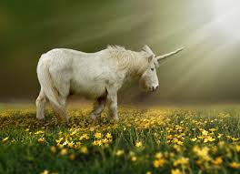
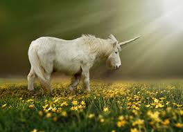

Spotlight Adoption

Each year the population of various mythical species things dramatically due to habitat loss and the lack of a loving home. Be a part of the solution and provide a safe and loving home to a beautiful creature today. Your new best friend awaits.
We are a nonprofit organization that rescues, rehabilitates, and rehomes mythical creatures in need of love. Are you ready to help? Volunteer, donate, foster, and/or adopt!
